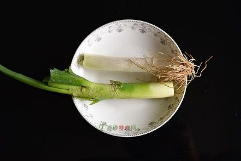

李时珍在《本草纲目》中称之为“圣药”。与人参、鹿茸并称“中药三宝”。有关阿胶的记载最早见于《神农本草经》，距今约有二千年。书中写道：阿胶“生东平郡，煮牛皮作之，出东珂。”可见阿胶最初是用牛皮熬制的。传至唐代，人们发现用驴皮熬的阿胶，药用功效更好，便将牛皮改为驴皮，并沿用至今。生产阿胶主要原料是驴皮，配以冰糖、绍酒、豆油等十几种辅料，用东阿特有的含多种矿物质的井水、采取传统的制作工艺熬制而成。它生产周期长，工艺要求严格，要经过选料、洗净、化皮、提炼、切削、凉晒等十几道工序，方可完成。现代科学化验分析，阿胶内含有人体所必需的十九种氨基酸。因此，阿胶亦被现代人们用作滋补佳品。创制出黄明胶、鹿角胶、龟板胶、狗骨胶等新产品，特别是阿胶补浆，阿胶酒和阿胶参茸精。
德州扒鸡是德州的著名特产，它以五香脱骨、肉嫩松软、清香不腻等特点而闻名，有神州一奇之美称。德州扒鸡已有三百年的历史，早在明代，德州城内及水旱码头上，即有叫卖烧鸡者。1692年（清康熙三十一年）扒鸡面世。1702年康熙皇帝南巡驻跸德州，下榻与其少时的老师著名诗人田文家，尝到了州城名产——五香脱骨扒鸡，龙颜大悦。从此，德州扒鸡做为贡品进入宫廷。乾隆年间，扒鸡制作艺人被召进皇宫御膳房，从而德州扒鸡名扬天下。二十世纪初，以扒鸡传人德州宝兰斋饭庄的掌柜侯宝庆，德顺斋掌柜韩世功等，认真总结祖宗的制作经验，多方探索、试制，完善工艺，改进配方，加工制成了具有独特风味的“五香脱骨扒鸡”。其特点是：造型优美，整鸡呈伏卧羽状，栩栩如生；色泽艳丽，成品金黄透红，晶莹华贵；香气醇厚，成品香味浓郁，经久不失，口味适众，口感咸淡适中，香而不腻，熟烂脱骨，正品不失原形，趁热抖动，骨肉分离。由于加工考究，配料齐全，色、香、味、形俱佳，很快占领市场，销路大开，名声也愈传愈远。

苍山大蒜，亦称葫或葫蒜。据东汉崔实著《东观汉记》载：“李恂，为兖州刺史，所种小麦、葫蒜，悉付从事，无所留”。由此知之，那时大蒜便在山东安家落户。大蒜有很高的食用价值和药用价值。《本草纲目》中谈及大蒜时说：“北方食肉面尤不可无”。大蒜具有降低胃内亚硝酸盐和抗肿瘤作用，仓山大蒜的这种作用更为突出，该县居民普遍有常年生食大蒜佐餐的习惯，除此之外，在收获大蒜的季节，蒜薹、蒜苗、新鲜大蒜成为家家户户的主要蔬菜。据山东省医学院科研所对山东省胃癌低发区的现场调查，发现仓山县是长江以北10万人口以上的县中胃癌死亡率最抵的县。仓山大蒜的成分优于他地大蒜成分的原因在于：仓山蒜区的土壤含较高的有机质，氮磷钾偏高；蒜区的井水多为偏碱水井，部分井水近似一级肥水；仓山大蒜在品质上除了具有香、辣、粘、浓、美味等特点外，其17中氨基酸含量均高于外地大蒜。仓山大蒜外贸出口已有20多年历史，远销新加坡、马来西亚、柬埔寨、泰国、香港等国家和地区。
苹果之乡 烟台：烟台市是我国苹果种植最早的地区，也是苹果栽种面积最大，产量最多的地区。烟台苹果，品种优良，风味独具，很受人们喜爱，被誉为胶东水果家族的“皇后”。烟台苹果甜脆可口，富于营养，除了含有丰富的糖外，还含有苹果酸、胡萝卜素、抗坏血酸以及钙、铁、锌等多种人体健康所必需的物质。所以，它倍受营养学家的青睐 烟台 苹果现有100多个品种，其中红富士、青香蕉、红香蕉、红星、金帅、国光最负盛名。红富士果型硕大，浓红如涂，郁香四溢，甜脆爽口；青香蕉呈淡绿色，含糖率极高，香甜如饴；红香蕉色美肉细，惹人喜爱；金帅果质金黄，清脆可口，是中秋应时佳品；国光则肉质脆，甜酸可口，更兼有耐贮藏的特点......这各具特色的烟台苹果，不仅为国内南北各地人们所欢迎，而且远销国外。烟台苹果的产量约占全国总产量的十分之一。( 烟台)烟台苹果以其个大形正，色泽鲜艳，光洁度好，酸甜适中，香脆可口而著称，芝罘区作为烟台市的中心区是其重要的苹果产地，被誉为“苹果之乡”。主要有红富士、新红星、嗄啦、乔纳金等新优品种60多个品系。烟台苹果属性凉，味甘。每100克苹果含糖13克、钙11毫克、铁0.3毫克，还含有胡萝卜素、维生素、有机酸、芳香醇、果胶等。苹果营养丰富，味道香甜，一向是老少皆宜，倍受青睐的果中佳品，具有补心益气、生津止咳、健胃和脾的功效。美国营养学家把它列为十种最有营养的食品之一。
乐陵是金丝小枣的原产地，其栽培始于商周，兴于魏晋，盛于明清，已有3000多年的栽培历史，是国家命名的“中国金丝小枣之乡”、“中国金丝小枣产业城”。乐陵金丝小枣皮薄肌丰，核小肉厚，清香甘甜。据中国营养协会专家检测，每百克乐陵金丝小枣含蛋白质1.5克，是苹果的5倍，维生素含量700毫克，是苹果的100倍，并富含维生素A、B、C、P及人体所必需的19种氨基酸和丰富的铁、硒、钾、钠、钙等多种微量元素，不仅营养丰富，而且对舒筋活络，促进血液循环、增强机体免疫力，平衡新陈代谢具有神奇的作用，被誉为“枣中之王”、“果中之冠”、“天然维生素丸”，历代为朝廷贡品，现仍为国家特需，当地有“一日食三枣，终年不见老；五谷加小枣，赛过灵芝草”的说法，其丰富的营养保健价值是由乐陵独特的地质结构、水土特征和气候条件所决定的，是其他任何地方无法比拟的。乐陵金丝小枣已列入国家原产地域保护，注册了“乐陵小枣”商标，并被认定为“山东省著名商标”，乐陵百万亩金丝小枣基地被划定为全国唯一的金丝小枣标准化示范区。
产于章丘县，素有“葱中之王”的美称。大葱营养丰富，富含有碳水化合物和硫、磷、铁等矿物质及多种维生素，有特殊的香味和辛辣味。常食大葱，能增食欲，健脾胃。大葱还具有较强的杀菌功效，也是一种良好的发汗剂。章丘大葱葱白肥大，细嫩多汁，于淡辣味中略带清甜，生吃、凉拌最佳，熟食、调味、和馅也好，且耐久藏，堪称葱中珍品。大葱是山东人最喜爱的常备蔬菜之一。大葱蘸酱就面饼，是地道的山东风味，尤为广大群众所喜食。大葱又是某些山东名菜的主要佐品，象烤鸭、锅烧肘子、清炸大肠、炸脂盖等都以大葱调味；葱烧海参、葱烧蹄筋、葱烧肉、葱扒鱼唇等名菜则以章丘大葱为主料；还有葱油泥、葱椒泥、葱油、葱椒绍酒等用葱制成的调味品。人们常说，如言山东菜，菜菜不离葱。章丘大葱的最大特点是“大”。它长势强，不分蘖，植株直立高大，主要品种为“大梧桐”。典型大梧桐株高可达175厘米，葱白直径6.7厘米，长度可达70厘米，单株重可达1500克。 
日照茶树越冬期比南方长1-2个月，昼夜温差大，利于内含物的积累，经专家鉴定，儿茶素、氨基酸的含量分别高于南方茶同类产品13.7%和5.3%。独特的气候和地理条件使日照生产的绿茶汤色黄绿明亮，栗香浓郁，回味甘醇，含有丰富的维生素、矿物质和对人体有益的微量元素，享有“江北第一茶”之美誉。中国农业科学院研究所专家对日照绿茶的评价是：叶片厚、香气高、滋味浓、耐冲泡。常饮日照绿茶能达到预防脑、心血管疾病，提神健胃，降压利尿、消食醒酒、防癌抗癌、减肥美容、延年益寿等功效。日照绿茶著名品牌有：山东省著名商标“雪青”牌、“河山青”牌、“浮来青”牌、“逢春”牌等。其中，日照绿茶公司生产的“河山青”牌碧绿茶在第29届布鲁塞尔国际博览会上获金奖，在第二届中国农业博览会上获银奖，被第三届中国农业博览会认定为国家级名牌产品，与历史名茶碧螺春齐名！
胶州种植大白菜已有400多年的历史。胶州大白菜的特点是个大帮薄、卷心紧、纤维少、汁白味甜，营养丰富，生食爽口，热食味腴。胶州大白菜在国内外享有很高声誉，号称“胶白”。这种菜耐储藏、易保管，是青岛城乡人民冬春季主要食用的蔬菜。( 青岛)胶州大白菜产于山东省胶州市南三里河村。它栽培历史悠久，具有其它地区大白菜所不具备的“外叶淡绿、纤维细嫩、美味可口、生熟食即可”的明显特征，是驰名中外的地方特产。 为满足国内外游客来胶州经贸洽谈、旅游、观光、考察的需求，胶州市旅游局在有关专家的指导和大力支持下，研制开发了在国内外享有盛名的胶州大白菜旅游纪念艺术佳品，具有极高的艺术欣赏和收藏价值。地域范围胶州大白菜是山东地理标志品牌产品,在本市的三里河、胶河、墨水河、胶莱河、大沽河、洋河两岸广为种植，面积6万亩左右。 特定品质“胶州大白菜”以其品质优良而著称，具有“帮嫩薄、汁乳白、味鲜美、纤维细、营养好”等优点，其品质和盛名史籍多有记载，文人多有吟颂。陈毅元帅曾在诗中赞美： “伟哉胶菜青，千里美良田”。 尤其鲁迅先生散文集《朝花夕拾？藤野先生》中的描述，更彰显了“胶州大白菜”的尊贵。